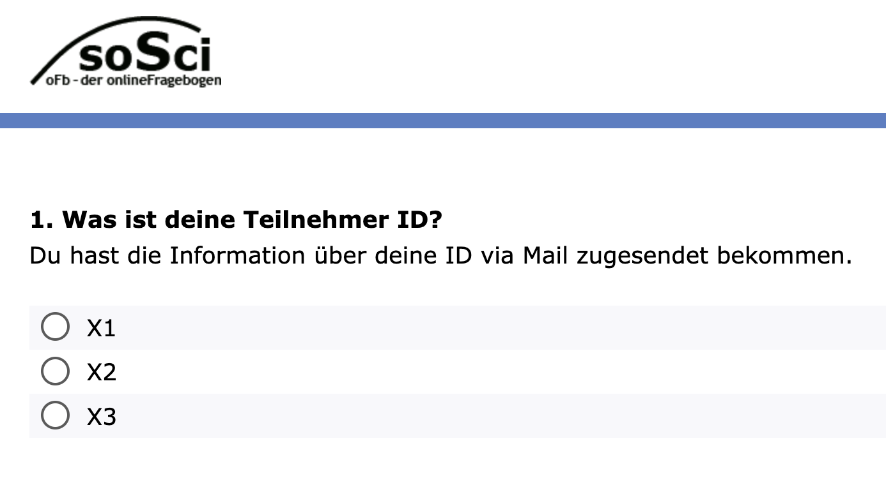

| Session | Datum | Time | Topic |
|---|---|---|---|
| 1 | 24.10.2024 | 09:45 - 11:15 | 🚀 Kick-Off |
| ✏️ Independent study and assignments | |||
| 2 | 09.01.2026 | 09:00 - 16:00 | 📚 From Theory to Questionaire |
| 3 | 23.01.2026 | 09:00 - 16:00 | 📚 From Questionaire to Pretest |
| 4 | 30.01.2026 | 09:00 - 16:00 | 📚 From Pretest to Analysis |
| 5 | 06.02.2026 | 09:00 - 16:00 | 📚 Analysis & Evaluation |
From Questionnaire to Pretest
Block 3
23.01.2026
Begrüßung & Koordination
Kurzer Rückblick & Organisatorisches zum Anfang
Semesterplan
Heutige Agenda
Überblick über den Ablauf des heutigen Tages
| Slot | Zeit | Programmpunkt |
|---|---|---|
| 09:00 - 09:15 | Begrüßung & Koordination | |
| 09:15 - 09:30 | Kurze Pause | |
| 1 | 09:30 - 11:15 | Feldvorbereitung im Fokus |
| 11:15 - 11:30 | Kurze Pause | |
| 2 | 11:30 - 13:00 | ntfy im Fokus |
| 13:00 - 14:00 | Mittagspause | |
| 3 | 14:00 - 15:45 | Hands-On: Fragebogentest |
| 4 | 15:45 - 16:00 | Abschluss & Ausblick |
Kurze Bestandsaufnahme
Arbeitsaufträge zur heutigen Sitzung
Gentle Reminder:
Wie ist der aktuelle Stand eurer R-Kenntnisse?
GitHub Copilot beantragt?
Gibt es Analyseverfahren, zu denen Ihr Input benötigt?
💬 Let’s discuss
Organisatorische Hinweise
- Handhabung von IDs (für Teilnehmer:In und Kurzfragebogen):
- Manuelle Eingabe der
"Teilnehmer_in ID", ID des Kurzfragebogens via Default-Umfrageparameter von SoSci-Survey
- Manuelle Eingabe der
- Zweiteilung des Befragungszeitraums:
- Phase 1: Mo. (26.01) bis Do. (29.01.) &
- Phase 2: Sa. (31.01) bis Mo. (02.02) / Do. (05.02)
- Ablauf der Befragung:
spätestens Sonntagabend erhaltet Ihr eine Mail mit einem Link zum Topic, das Ihr abonnieren müsst, und Ausfüllhinweisen
ab Montag startet die Erhebung
bei Problemen: Umgehend Nachricht ins StudOn-Forum
Short Break
15 Minuten Pause
15:00
Feldvorbereitung im Fokus
Kurze Präsentation des aktuellen Stands der Umfrage, Problemen & Herausforderungen
💻 And now … you!
Arbeitsauftrag (30 Minuten): Feldvorbereitung
Arbeitsauftrag
In euren Gruppen …
- erstellt eine Kurzpräsentation (max. 4 Folien, 5–10 Minuten), die auf folgende Punkte eingeht:
- Wie sieht euer aktueller Kurzfragebogen aus? (1 Folie)
- Darstellung des (geplanten) Schedules für die Umfrage (1 Folie)
- Vorstellung der Ausfüllhinweise (1 Folie)
- Gibt es Herausforderungen oder Probleme, die Ihr diskutieren möchtet? (1 Folie)
- Bitte nutzt die bereitgestellte Folienvorlage (Google Slides) auf der nächsten Folie
Folienvorlage verwenden
- Bitte nutzt die bereitgestellte Folienvorlage (Google Slides) auf der nächsten Folie
Get started!
Bitte nutzt die jeweilige Folienvorlage für die Dokumentation eurer Ergebnisse
30:00
Short Break
15 Minuten Pause
15:00
ntfy im Fokus
Vorstellung der Tools für die Feldsteuerung: Planung & Durchführung
ntfy me!
ntfy.sh als Tool für die Feldsteuerung
- Nutzung von ntfy.sh als einfacher Push-Benachrichtigungsdienst zur Übermittlung von Erinnerungen für ESM-Studien
- Open-Source, einfach zu bedienen und flexibel anpassbar
- Skriptbasiertes Scheduling (via Server)

Was ist ntfy.sh?
Kurze Erklärung der Funktionsweise
- Publish/Subscribe-Prinzip: Clients abonnieren ein
Topic(bzw. einen Link) und erhalten sofort Updates - Nachrichten lassen sich per HTTP-Request (z. B.
curloderpython) senden - Funktioniert auf Smartphone & Desktop via Web-App oder native App
- Kostenlos, aber mit Einschränkungen
- “Private” Topics nur mit Pro-Account
- Workaround mit hochindividualisierten Themen
- Aber es bleibt ein “Restrisiko”
Topic als Gatekeeper
Vorstellung eines typischen Workflows
- Topic festlegen (z. B.
dbd25-20260123-block2-live-test-in-course) - Teilnehmende abonnieren das Topic in der ntfy App
- Server sendet automatisierte & randomisierte Reminder (via systemd)
Beispiel: Reminder mit Titel
nfty_scheduler als little helper
Eigenes -Projekt zur Steuerung der Fragebögen
- Python-CLI als leichtes Paket (
run.py+ntfy_reminder/) - Helper besteht aus drei Teilen bzw. trennt Konfiguration, Planung und Versand:
.envdefiniert die globalen Parameter,planerzeugtout/schedule.json,sendverschickt
Was der Helper steuern kann
Folgende Argumente werden mit dem Helper abgebildet bzw. können definiert werden
Zeitlogik:
--mode interval|windows,--start,--end,--min-gapDichte:
--per-day,--days,--seed(reproduzierbar)Zielgruppe:
--participant-id(personalisierte Pläne)Ausgabe:
--dry-run,--explain,--out
Arbeiten im
Demo-Notebook aus dem Helper-Repo
- Colab ist eine cloudbasierte Jupyter-Umgebung, die direkt im Browser läuft.
- Notebooks werden auf Googles Servern ausgeführt und vereinen Code, Text und Output.
- Im Kurs nutzen wir Colab, um die notwendigen Dateien (z. B.
.env, Schedule) aus dem Notebook zu exportieren.
Lunch Break
60 Minuten Mittagspause
Hands-on: Testet euren Fragebogen
Nutzung des Google Colab Notebooks zur Überprüfung
Download
Reminder: Bitte downloadet die App, um die Notifications zu testen
ID Variable hinzufügen!
Reminder: Bitte denkt daran, die Frage nach der Teilnehmer:In ID einzubauen
- Frage sollte auf der ersten Seite des Fragebogens stehen
- Template-Frage ist auf StudOn verfügbar
- Preview:

💻 Hands-on Zeit!
Arbeitsauftrag (90 Minuten): Testet euren Fragebogen
Arbeitsauftrag
In euren Gruppen …
- öffnet das Google Colab
- geht die Dry-Runs des Beispiels durch
- nehmt die notwendigen Anpassungen im Abschnitt Individualisierung vor
- Erstellt die notwendigen Dateien (
schedule.json&.env)
Währenddessen: Feedback & Fragen
- Sucht das Gespräch zu anderen Gruppen und gebt euch gegenseitig Hilfe und Feedback
- Ich bin während der gesamten Zeit für Fragen und Unterstützung verfügbar
- Ich wandere von Gruppe zu Gruppe, um Feedback zu geben und Fragen zu beantworten
Bis zum Ende der Sitzung
Checkliste
Bis zum Ende der Sitzung benötige ich von euch …
per Mail an christoph.adrian@fau.de
Time for questions
Until we see each other again
Die nächsten Schritte
- spätestens Sonntagabend erhaltet Ihr eine Mail mit dem Link zum Topic, das Ihr abonnieren müsst
- ab Montag startet die Erhebung (vier Tage)
- schaut in die Datenvorschau und überlegt, wie ihr die Daten auswerten möchtet
- (mindestens Entwurf für) Auswertungsstrategie zur nächsten Sitzung